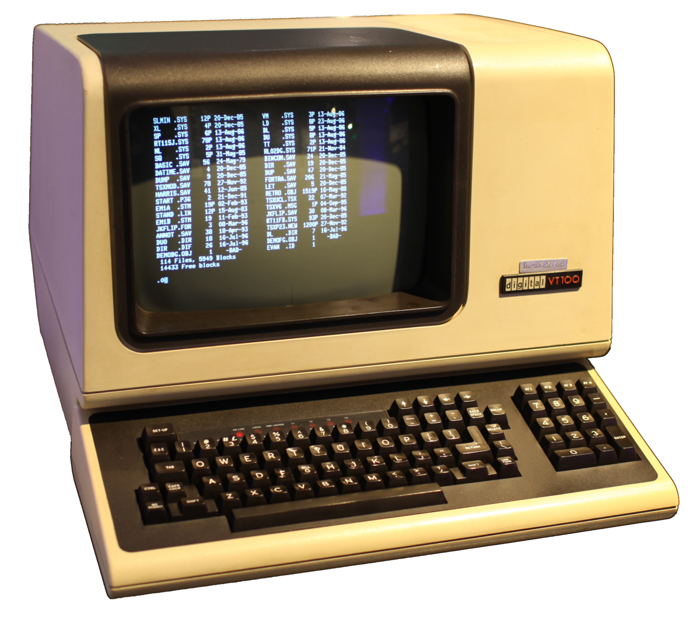

Effective terminal
JIT.jar / Piotr Zajac

What makes you an expert is
üìñ knowledge + üó° skills
Goals
- Show some cool tools to simplify everyday work
- Know how to start automating repeatable tasks
- Make you curious to look for more
What is a terminal ?
- Terminal emulator
- Shell (i.e. script interpreter)
- Optional framework
| Linux | macOS | Windows | |
|---|---|---|---|
| Terminal Emulator | kitty | iTerm2 | ConEmu |
| Interpreter | bash, zsh, fish | CMD*, PowerShell* | |
| Framework | Oh My Zsh | PSFramework* | |
*use WSL instead

BASICS
Unix text processing tools
| echo | print text |
| cat | print and concatenate files |
| nl | number lines |
| wc | count lines, words, or characters |
| head | display file first part |
| tail | display file last part |
| grep | find patterns with RegEx |
| sed | searched and replaced |
a bit of plumbing
 Pipe
Pipe
| redirects the output from one program as input to another program
Other Redirections
| > | Save output (STDOUT) to a file. |
| >> | Append output (STDOUT) to a file. |
| < | Read input (STDIN) from a file. |
Some tools can access clipboard through STDIN and STDOUT!
(macOS: pbcopy / pbpaste)
Modern alternatives
| grep | ➡️ | rg (ripgrep) |
| sed | ➡️ | sd |
| find | ➡️ | fd |
| and many more... | ||
LEARN
Just use
man
?

tldr
for the rescue!

NAVIGATE
First choice
- tree
- Zsh-z
(Oh My Zsh plugin)
But there are plenty more!
Meet the fzf
A command-line fuzzy finder of everything
- files
- stdin
- params
- history

PREPARE
the tools
• alias (Unix wide):
alias gca='git commit -a --amend --no-edit'• function (Zsh exclusive)
function goto(){
DESTINATION=$(fd -t d | fzf)
if [ "$DESTINATION" = "" ]; then
echo "Empty destination" || exit 2
else
cd "./$DESTINATION"
fi
}• xargs
Spell examples
- shortcuts of unhandy names
- git
- checkout to remote
- make backup of current branch
- open GitHub with current repo PR’s
- show commits in any order
- Open folder as project in IntelliJ

PRESERVE
dotfiles repository
- store carefully crafted configuration in a repo
- keep list of all used packages (tools)
- prepare initialization script

FIGHT
Data processing
is just easier with CLI tools...
- viewing
- searching
- extracting
- modifying
- converting
json, yml, csv are going to be with us for a long time
Data processing tool selection
| jq | json processor |
| yq | yaml processor |
| gron | makes json discrete |
| yj | yaml ↔️ json |
| miller | json ↔️ csv... and much, much more |

EXPLORE
other cool tools
| Show calendar | cal |
| Use translator | translate-shell |
| Save copied images to file | pngpaste |
| View images | imgcat |
| Edit pdfs | qpdf |
| Send files locally by QR | qrcp |
Link selection
Bonus
Use grepper browser extension
Slides